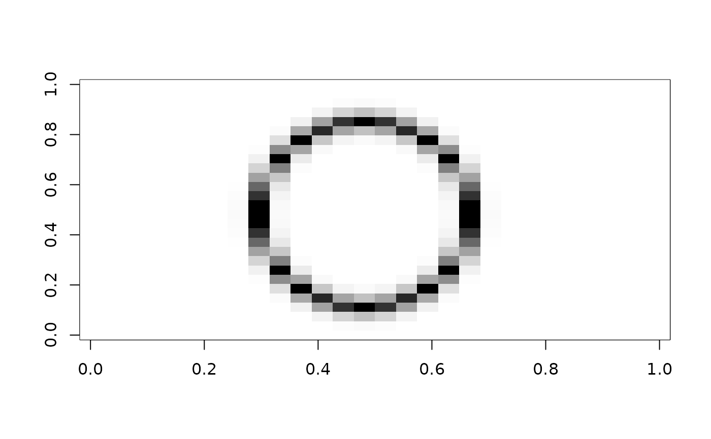
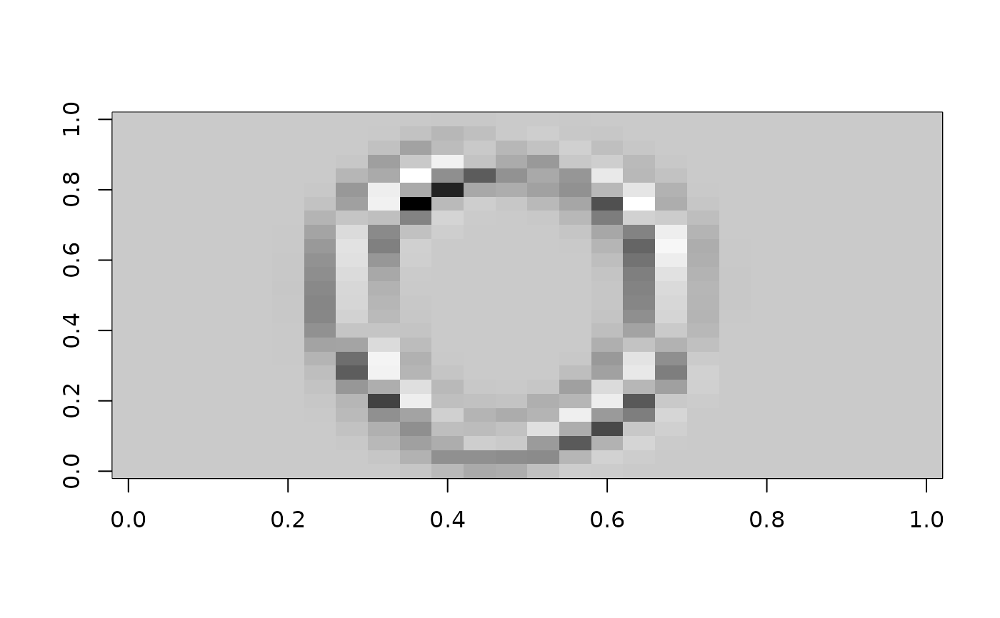

Generates random convolutional features from a list of images. Convolutional kernels are generated randomly (either from a Gaussian distribution or as patches extracted from the training images), applied to each image via efficient matrix multiplication, and then pooled to produce a fixed-size feature vector per image.
Arguments
- x
A list of images, where each image is a matrix (for grayscale) or a 3D array with dimensions (height, width, channels) for color images. Images may have different dimensions, but must be large enough to accommodate the convolution kernel size. Missing values are not allowed.
- p
The number of random convolutional kernels to generate.
- size
The size of the square convolutional kernel (e.g., 3 means a 3x3 kernel).
- stride
The stride for the convolution operation, i.e., how many pixels to skip between kernel applications. Default is 1.
- kernel_gen
Method for generating convolutional kernels. Either
"rnorm"to generate kernels with entries drawn i.i.d. from a standard Normal distribution, or"patch"to extract random patches from the input images.- activation
A function to pool the convolution outputs for each kernel. Defaults to
max(). The function should accept a numeric vector and return a scalar or vector of pooled values. Common choices includemax(),mean(), functions like the proportion of positive values (PPV), which can be implemented withfunction(x) mean(x > 0). Multivariate pooling functions are also supported.- stdize
How to standardize the predictors, if at all. The default
"scale"appliesscale()to the input so that the features have mean zero and unit variance,"box"scales the data along each dimension to lie in the unit hypercube, and"symbox"scales the data along each dimension to lie in \([-0.5, 0.5]^d\).- kernels
Optional matrix of pre-specified convolutional kernels, where each column is a kernel in column-major format. If provided, overrides
p,size, andkernel_gen.- shift
Vector of shifts, or single shift value, to use. If provided, overrides those calculated according to
stdize.- scale
Vector of scales, or single scale value, to use. If provided, overrides those calculated according to
stdize.
Value
A matrix of random convolutional features with one row per image in
x and one column per kernel (or more columns if activation is
multivariate).
Examples
x = outer(1:28, 1:28, function(x, y) {
d = sqrt(4*(x - 14)^2 + (y - 14)^2)
dnorm(d, mean = 10, sd = 0.8)
})
pal = gray.colors(256, 1, 0)
image(x, col = pal)

# one random kernel (no activation)
m = b_conv(list(x), p=1, activation=function(x) x)
image(matrix(m, nrow = 26), col = pal)

# many kernels (realistic use case)
m = b_conv(list(x), p = 100, size = 3)
str(m)
#> 'b_conv' num [1, 1:100] 4.75 7.51 10.66 27.95 16.69 ...
#> - attr(*, "kernels")= num [1:9, 1:100] 0.0385 -0.3564 0.7828 0.8044 -1.9001 ...
#> - attr(*, "shift")= num 0.0404
#> - attr(*, "scale")= num 0.115
#> - attr(*, "size")= num 3
#> - attr(*, "stride")= num 1
#> - attr(*, "call")= language b_conv(list(x), p = 100, size = 3)